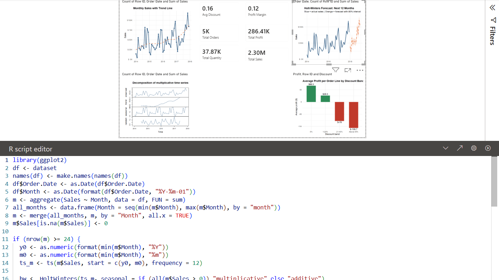
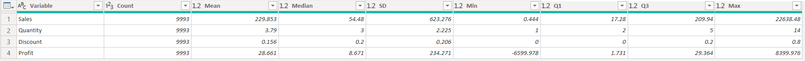
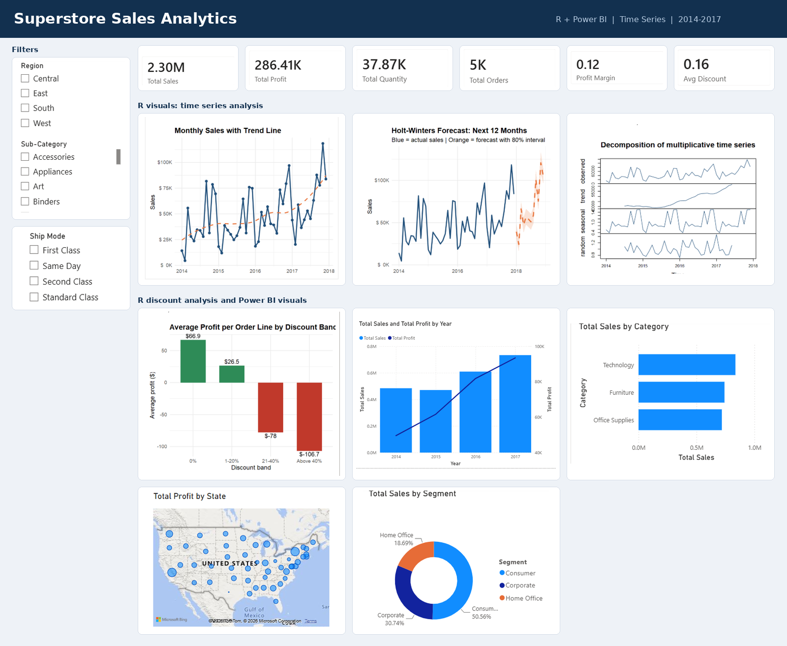
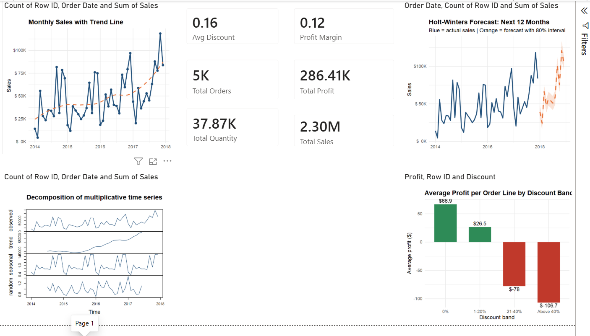
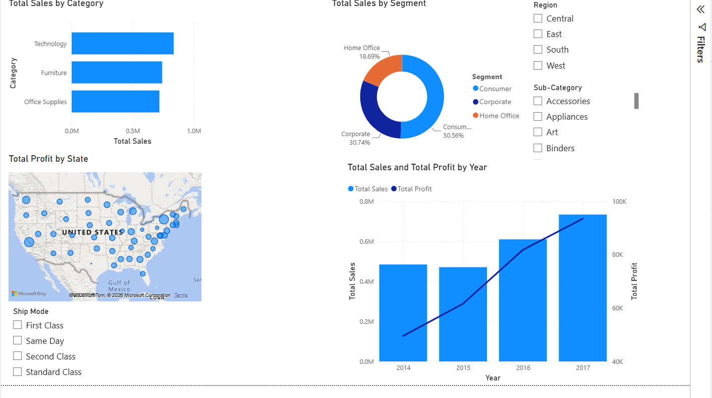
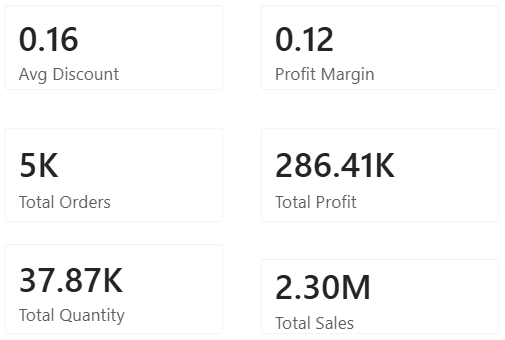

What this assignment asks for
The brief is to connect R with Power BI Desktop, pick a dataset, run one advanced technique and then present everything in an interactive dashboard. I used the Sample Superstore data (about four years of US retail orders) and chose time series analysis, ending in a 12 month Holt-Winters sales forecast. Everything below follows the order of the task list in the practical sheet.
| Dashboard requirement | Needed | What I built |
|---|---|---|
| KPI cards | 5 or more | 6: Total Sales, Total Profit, Total Quantity, Total Orders, Profit Margin, Avg Discount |
| R visualizations | 4 or more | 4: monthly trend, decomposition, Holt-Winters forecast, profit by discount band |
| Power BI visualizations | 4 or more | 4: sales by category, sales by segment, profit by state map, sales and profit by year |
| Slicers | Interactive | Region, Sub-Category, Ship Mode |
| Filters | Yes | Filters pane on the report, plus the slicers above |
| Drill-down | Yes | Year to quarter to month on the date axis of the sales and profit chart |
| Layout | Professional | KPI row on top, slicers on the left, R visuals and Power BI visuals in a grid |
The practical sheet lists ten tasks. This is how each one maps to a section of the post:
| # | Task | Requirement | Where |
|---|---|---|---|
| 1 | R Installation | Configure R with Power BI | Section 2 |
| 2 | Import Dataset | Load dataset into Power BI | Section 3 |
| 3 | Data Cleaning | Handle missing values and duplicates | Section 4 |
| 4 | R Script | Execute R script successfully | Section 4 and 6 |
| 5 | Summary Statistics | Generate descriptive statistics | Section 5 |
| 6 | Data Visualization | Create R-based visualizations | Section 6 |
| 7 | Advanced Analytics | Implement one ML/statistical technique | Section 7 |
| 8 | Interactive Dashboard | Integrate R visuals with Power BI | Section 8 |
| 9 | Business Insights | Interpret analytical results | Section 10 |
| 10 | Conclusion | Summarize findings | Section 11 |
Configuring R with Power BI
Power BI does not ship with R, so the first job was installing R from CRAN and pointing Power BI at it. In Power BI Desktop I opened File > Options and settings > Options > R scripting and checked that the detected home directory matched my R installation. Without this step the R script visual refuses to run.
The only package I needed beyond base R was ggplot2, which I installed once from the R console:
install.packages("ggplot2")
Importing the dataset
I loaded Sample - Superstore.csv through Home > Get data > Text/CSV and chose Transform Data instead of Load, because the cleaning happens in Power Query. The file uses latin1 encoding, so I set the file origin to Western European to stop the accented characters from breaking. Dates arrive as text in US month/day/year format, which the script below converts.
Cleaning the data
In Power Query I used Transform > Run R script. Power BI hands the table to R as a data frame called dataset, and any data frame left in the script becomes a table I can pick afterwards. The script does four things: fixes the date columns, fills missing values, removes duplicate records and then calculates descriptive statistics.
- Dates: Order Date and Ship Date are converted to real dates, whichever format they come in.
- Missing values: numeric columns get the median, text columns get the label "Unknown".
- Duplicates: Row ID is just a counter, so I ignore it when comparing rows and drop exact repeats.
df <- dataset
# 1. Make sure Order Date / Ship Date are real dates (US format m/d/Y)
fix_date <- function(x) {
if (inherits(x, "POSIXt")) return(as.Date(x))
if (inherits(x, "Date")) return(x)
as.Date(as.character(x), format = "%m/%d/%Y")
}
df[["Order Date"]] <- fix_date(df[["Order Date"]])
df[["Ship Date"]] <- fix_date(df[["Ship Date"]])
# 2. Missing values: numeric -> median, text -> "Unknown"
for (col in names(df)) {
if (is.numeric(df[[col]])) {
df[[col]][is.na(df[[col]])] <- median(df[[col]], na.rm = TRUE)
} else if (is.character(df[[col]]) || is.factor(df[[col]])) {
v <- as.character(df[[col]])
v[is.na(v) | v == ""] <- "Unknown"
df[[col]] <- v
}
}
# 3. Duplicates: ignore the Row ID counter, drop exact repeated records
dup <- duplicated(df[, setdiff(names(df), "Row ID")])
df <- df[!dup, ]
# 4. Cleaned table
clean_data <- df
# 5. Summary statistics (descriptive) for the numeric columns
num_cols <- c("Sales", "Quantity", "Discount", "Profit")
summary_stats <- do.call(rbind, lapply(num_cols, function(col) {
x <- df[[col]]
data.frame(
Variable = col,
Count = length(x),
Mean = round(mean(x), 3),
Median = round(median(x), 3),
SD = round(sd(x), 3),
Min = round(min(x), 3),
Q1 = round(quantile(x, 0.25), 3),
Q3 = round(quantile(x, 0.75), 3),
Max = round(max(x), 3),
stringsAsFactors = FALSE
)
}))
rownames(summary_stats) <- NULLAfter it ran I clicked Table next to clean_data and summary_stats, renamed the cleaned table to Superstore, then used Close & Apply.
Summary statistics
The summary_stats table comes out of the same script and describes the four numeric columns. Each row reports the count, mean, median, standard deviation, minimum, first quartile, third quartile and maximum.
| Variable | What it measures | Statistics reported |
|---|---|---|
| Sales | Revenue of one order line in dollars | Count, Mean, Median, SD, Min, Q1, Q3, Max |
| Quantity | Units on the order line | |
| Discount | Discount fraction applied (0 to 0.8) | |
| Profit | Profit of the order line, can be negative |

The four R visuals
Each R visual is an R script visual from the Visualizations pane. For every one I dragged Row ID plus the fields named below into Values. Row ID matters: without it Power BI collapses rows that look identical before R sees them, which quietly changes the totals. Order Date has to be dragged as a plain field, not the date hierarchy.
Monthly sales trend
Fields: Row ID, Order Date, Sales. Orders are summed per month, plotted as a line, and a dashed LOESS curve shows the underlying direction.
library(ggplot2)
df <- dataset
df$Order.Date <- as.Date(df[["Order Date"]])
df$Month <- as.Date(format(df$Order.Date, "%Y-%m-01"))
m <- aggregate(Sales ~ Month, data = df, FUN = sum)
ggplot(m, aes(x = Month, y = Sales)) +
geom_line(color = "#1F4E79", linewidth = 1) +
geom_point(color = "#1F4E79", size = 1.8) +
geom_smooth(method = "loess", formula = y ~ x, se = FALSE,
color = "#E8743B", linetype = "dashed", linewidth = 0.9) +
scale_y_continuous(labels = function(x) paste0("$", format(x / 1000, big.mark = ","), "K")) +
labs(title = "Monthly Sales with Trend Line", x = NULL, y = "Sales") +
theme_minimal(base_size = 12) +
theme(plot.title = element_text(face = "bold"))Time series decomposition
Fields: Row ID, Order Date, Sales. This splits the monthly series into trend, seasonal and random parts. Months removed by a slicer are filled with zero so the series stays regular, and the visual asks for at least 24 months before it will draw.
df <- dataset
df$Order.Date <- as.Date(df[["Order Date"]])
df$Month <- as.Date(format(df$Order.Date, "%Y-%m-01"))
m <- aggregate(Sales ~ Month, data = df, FUN = sum)
# fill any months removed by slicers so the series stays regular
all_months <- data.frame(Month = seq(min(m$Month), max(m$Month), by = "month"))
m <- merge(all_months, m, by = "Month", all.x = TRUE)
m$Sales[is.na(m$Sales)] <- 0
if (nrow(m) >= 24) {
y0 <- as.numeric(format(min(m$Month), "%Y"))
m0 <- as.numeric(format(min(m$Month), "%m"))
ts_m <- ts(m$Sales, start = c(y0, m0), frequency = 12)
plot(decompose(ts_m, type = if (all(m$Sales > 0)) "multiplicative" else "additive"),
col = "#1F4E79")
} else {
plot.new()
text(0.5, 0.5, "Select at least 24 months of data\nto show the decomposition", cex = 1.2)
}Holt-Winters forecast
Fields: Row ID, Order Date, Sales. This is the advanced analytics part, explained in the next section.
library(ggplot2)
df <- dataset
df$Order.Date <- as.Date(df[["Order Date"]])
df$Month <- as.Date(format(df$Order.Date, "%Y-%m-01"))
m <- aggregate(Sales ~ Month, data = df, FUN = sum)
all_months <- data.frame(Month = seq(min(m$Month), max(m$Month), by = "month"))
m <- merge(all_months, m, by = "Month", all.x = TRUE)
m$Sales[is.na(m$Sales)] <- 0
if (nrow(m) >= 24) {
y0 <- as.numeric(format(min(m$Month), "%Y"))
m0 <- as.numeric(format(min(m$Month), "%m"))
ts_m <- ts(m$Sales, start = c(y0, m0), frequency = 12)
hw <- HoltWinters(ts_m, seasonal = if (all(m$Sales > 0)) "multiplicative" else "additive")
fc <- predict(hw, n.ahead = 12, prediction.interval = TRUE, level = 0.80)
fut <- seq(max(m$Month), by = "month", length.out = 13)[-1]
fdf <- data.frame(Month = fut,
Forecast = as.numeric(fc[, "fit"]),
Lower = pmax(as.numeric(fc[, "lwr"]), 0),
Upper = as.numeric(fc[, "upr"]))
ggplot() +
geom_ribbon(data = fdf, aes(x = Month, ymin = Lower, ymax = Upper),
fill = "#E8743B", alpha = 0.2) +
geom_line(data = m, aes(x = Month, y = Sales), color = "#1F4E79", linewidth = 1) +
geom_line(data = fdf, aes(x = Month, y = Forecast), color = "#E8743B",
linewidth = 1.1, linetype = "dashed") +
scale_y_continuous(labels = function(x) paste0("$", format(x / 1000, big.mark = ","), "K")) +
labs(title = "Holt-Winters Forecast: Next 12 Months",
subtitle = "Blue = actual sales | Orange = forecast with 80% interval",
x = NULL, y = "Sales") +
theme_minimal(base_size = 12) +
theme(plot.title = element_text(face = "bold"))
} else {
plot.new()
text(0.5, 0.5, "Select at least 24 months of data\nto build the forecast", cex = 1.2)
}Average profit by discount band
Fields: Row ID, Discount, Profit. Discounts are grouped into four bands and the mean profit per order line is plotted, green for profit and red for loss.
library(ggplot2)
df <- dataset
df$Band <- cut(df$Discount, breaks = c(-0.01, 0, 0.2, 0.4, 1),
labels = c("0%", "1-20%", "21-40%", "Above 40%"))
agg <- aggregate(Profit ~ Band, data = df, FUN = mean)
ggplot(agg, aes(x = Band, y = Profit, fill = Profit > 0)) +
geom_col(width = 0.65) +
geom_text(aes(label = paste0("$", round(Profit, 1)),
vjust = ifelse(Profit >= 0, -0.4, 1.3)), size = 4) +
scale_fill_manual(values = c("TRUE" = "#2E8B57", "FALSE" = "#C0392B"), guide = "none") +
labs(title = "Average Profit per Order Line by Discount Band",
x = "Discount band", y = "Average profit ($)") +
theme_minimal(base_size = 12) +
theme(plot.title = element_text(face = "bold"))Holt-Winters forecasting
Monthly Superstore sales show two things at once: a slow upward trend and a repeating seasonal pattern with weak early months and a strong November and December. Holt-Winters exponential smoothing is built for exactly that, because it tracks a level, a trend and a seasonal index and updates all three as new months arrive. I used the multiplicative form, since the seasonal swings get larger as sales grow (the decomposition panel agrees).
The model is fitted with R's HoltWinters() and projected 12 months ahead with an 80% prediction interval. The shaded orange band in the forecast chart is that interval, so a wider band simply means less certainty further out.
To check accuracy I also wrote an optional RStudio block that trains on 2014 to 2016, predicts 2017 and reports MAPE and RMSE. It cannot run inside Power BI because it reads the CSV directly:
raw <- read.csv("Sample - Superstore.csv", fileEncoding = "latin1", check.names = FALSE)
raw$`Order Date` <- as.Date(raw$`Order Date`, format = "%m/%d/%Y")
raw$Month <- as.Date(format(raw$`Order Date`, "%Y-%m-01"))
m <- aggregate(Sales ~ Month, data = raw, FUN = sum)
ts_all <- ts(m$Sales, start = c(2014, 1), frequency = 12)
train <- window(ts_all, end = c(2016, 12))
test <- window(ts_all, start = c(2017, 1))
hw <- HoltWinters(train, seasonal = "multiplicative")
pred <- predict(hw, n.ahead = 12)
MAPE <- mean(abs((test - pred) / test)) * 100
RMSE <- sqrt(mean((test - pred)^2))
cat("MAPE:", round(MAPE, 2), "% RMSE:", round(RMSE, 0), "\n")Add your own MAPE and RMSE from RStudio here if you ran the check. I have not filled in numbers I did not produce.
The final dashboard
The report has two pages in Power BI, one for the R time series work and one for the standard Power BI visuals. The image below puts them together in a single view: slicers on the left, KPI cards across the top, the four R visuals in the upper grid and the Power BI visuals underneath.

The R visuals respond to the slicers like any other visual. Picking a region or ship mode filters the data frame that Power BI sends to R, and the charts redraw. That is also why the 24 month guard exists in the scripts: a narrow selection can leave too little history for decomposition or forecasting, and the visual then says so instead of throwing an error.
The Power BI side has four visuals:
| Visual | Type | Question it answers |
|---|---|---|
| Total Sales by Category | Bar chart | Which product category brings in the most revenue? |
| Total Sales by Segment | Donut chart | How is revenue split across customer types? |
| Total Profit by State | Map | Where is profit concentrated geographically? |
| Total Sales and Total Profit by Year | Column and line | Is profit growing as fast as sales? |
For reference, these are the two report pages as I built them before combining:


KPI cards

| KPI | Value | Reading |
|---|---|---|
| Total Sales | 2.30M | Revenue across 2014 to 2017 |
| Total Profit | 286.41K | Profit after cost of goods |
| Total Quantity | 37.87K | Units sold |
| Total Orders | 5K | Distinct orders placed |
| Profit Margin | 0.12 | Total Profit divided by Total Sales, about 12 cents per dollar |
| Avg Discount | 0.16 | Average discount on an order line, about 16% |
Business insights
Discounts above 20% lose money
This was the clearest result. Order lines with no discount average $66.9 profit and those with 1 to 20% off still average $26.5. Once the discount passes 20% the average flips to a loss, and above 40% it loses $106.7 per line.
| Discount band | Average profit per order line |
|---|---|
| 0% | $66.9 |
| 1-20% | $26.5 |
| 21-40% | -$78.0 |
| Above 40% | -$106.7 |
With an average discount of 16%, the store is not far from the point where it starts to lose margin, so deep discounts deserve a cap or an approval step.
Sales and profit are growing together
Yearly sales were flat between 2014 and 2015, then climbed in 2016 and again in 2017. Profit rose every year and the profit line grows a little faster than the bars, which suggests margin held up while volume grew.
Strong seasonality
The decomposition shows a seasonal pattern that repeats every year, with the highest months around the end of the year. The forecast carries that shape into the next 12 months, with sales continuing to rise and the usual late-year peak.
Where the money comes from
Technology leads on sales, with Furniture and Office Supplies close behind each other. By customer type the Consumer segment brings in just over half of revenue.
| Segment | Share of sales |
|---|---|
| Consumer | 50.56% |
| Corporate | 30.74% |
| Home Office | 18.69% |
What I would suggest
| Finding | Suggested action |
|---|---|
| Discounts over 20% are unprofitable | Cap discounts near 20% unless a manager signs off |
| Predictable year-end peak | Plan stock and staffing ahead of the forecast peak |
| Consumer segment is half of revenue | Focus campaigns there, and look at growing Corporate |
| Profit varies by state on the map | Check the low-profit states on the map and review pricing and shipping costs there |
Conclusion
Running R inside Power BI gave me the best of both: Power BI for slicers, cards and layout, and R for the statistical work Power BI cannot do natively, namely decomposition and a seasonal forecast. The cleaning script made the data safe to use, the Holt-Winters model produced a 12 month forecast with an uncertainty band, and the dashboard tied it together so the R charts react to the same filters as everything else.
The main takeaway for the business is that growth is healthy and seasonal, but heavy discounting is eating profit. If I extended this I would add a proper train and test accuracy check to the report and compare Holt-Winters against an ARIMA model.
Files: full R script